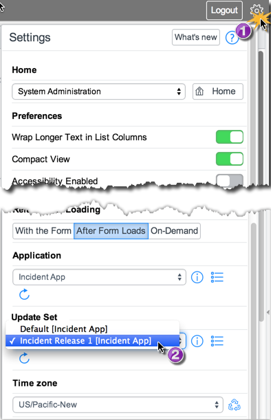
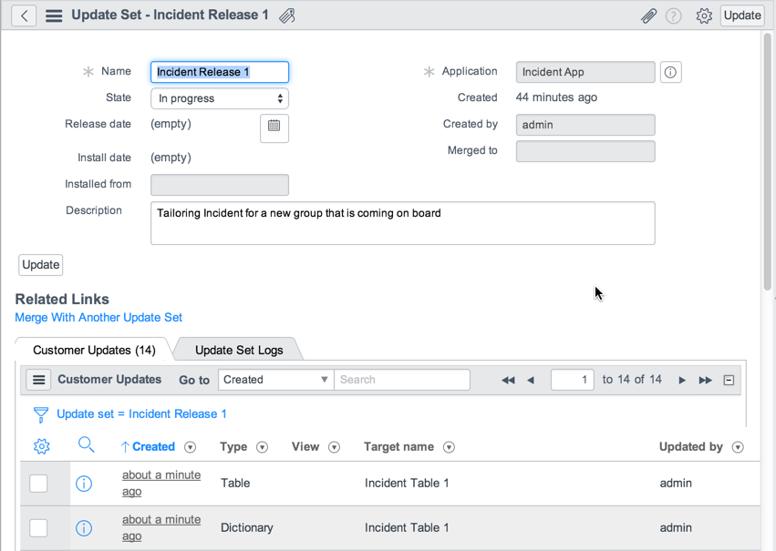
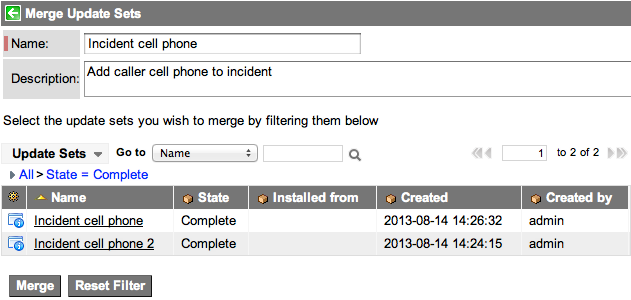
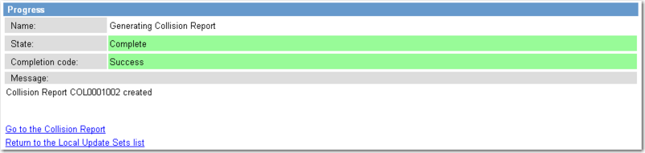
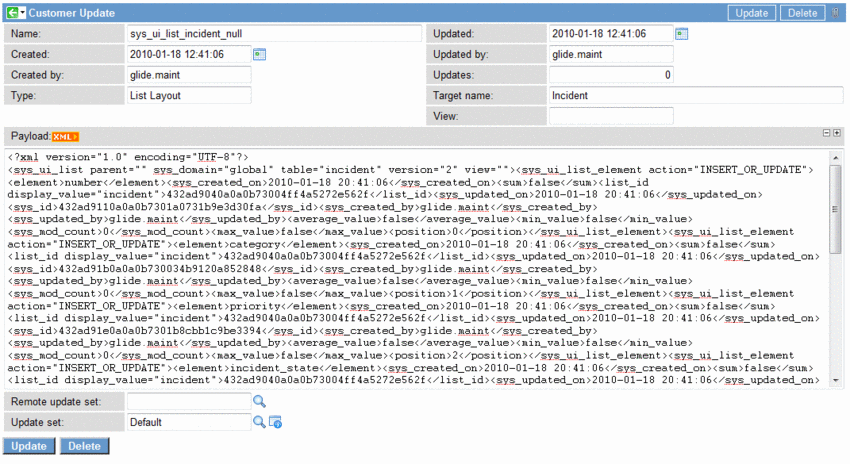

Using Update Sets
| |
Note: This article applies to Fuji and earlier releases. For more current information, see Update Set Use at http://docs.servicenow.com
The ServiceNow Wiki is no longer being updated. Visit http://docs.servicenow.com for the latest product documentation. |
Contents
1 Overview
An update set is a group of customizations that can be moved from one instance to another. For example, a set of enhancements to incident management can be grouped in an update set called Incident Management 2.0. While Incident Management 2.0 is marked as the current update set, all changes are tracked in it.
Before using update sets, review the Getting Started with Update Sets page to learn when to use and when not to use update sets, and how to plan the update process and avoid common pitfalls. Then, create an update set and use it to make changes on a development instance. You can report on updates, merge update sets, and compare update sets to ensure the desired changes are ready to move.
When the update set is completed, you can transfer the update set to another instance according to your test process. See Transferring Update Sets.
| |
Note: Properties that are tagged as Private are excluded from update sets. Keeping system properties private prevents settings in one instance from overwriting values in another instance. For example, you may not want a system property in a production instance to use a particular value from a development instance. See Adding a Property. |
2 Creating Update Sets
To create a new update set:
- Navigate to System Update Sets > Local Update Sets and click New.
- Enter update set details (see table). For more information, see Getting Started with Update Sets and Update Sets Best Practices.
- Click Submit to create the update set. Starting with the Fuji release: if the picker is enabled and the update set is in the In progress state, click Submit and Make Current to:
- Create the update set
- Select the new update set in the Update Set picker
- Add customizations to the new update set.
{kind=link}
| Field | Description |
|---|---|
| Name | Enter a unique name for the update set. You can use naming conventions to organize update sets. For example, add the problem number to the name of the update that fixes it, identify the application scope, or use sequence numbers to keep track of the order in which update sets need to be committed. |
| State | Select In progress for a new update set. Selecting an In progress update set tracks customizations in the update set. The Update Set picker only displays In progress update sets.
Select Completed only when you are certain that the update set is complete. After it is marked Completed, do not set it back to In progress. Instead, create a new update set with further customizations, and make sure to commit the update sets in the order that they were marked Completed. Use Completed update sets to transfer changes from one instance to another. Select Ignore when you are no longer working on an update set but do not want it to be transferred to another instance. You should always set Completed update sets on the production instance to Ignore. This state ensures the update set is not committed again when cloning the instance. |
| Created By | Populates your user name when you submit a new update set record. |
| Created | Populates the timestamp when you submit a new update set record. |
| Release Date | Enter the date on which you plan to release the update set. |
| Application (starting with the Fuji release) | Populates the application scope that is currently selected in the Application picker. All changes in the update set apply only to the current scope. |
| My Current Set (prior to the Fuji release) | Select the check box to add your customizations to the current update set. Selecting this check box selects the current update set from the Update Set picker if the picker is enabled and the update set is in the In Progress state. |
| Description | Enter a description of the update set. |
3 Select an Update Set
Update sets track changes as you develop. Follow this procedure to specify the update set that should collect the updates that you make:
- Open the Settings panel.
- Select the desired update set from the Update Set picker. Starting with the Fuji release, only update sets that are appropriate for the current application scope appear in the selection list and the associated application is displayed in square brackets.
- Update Set picker
{kind=link}
Now, any customization that you perform on a tracked table is recorded by the update set. For example:
- An update record is added or updated in the current update set.
- A new version record is created with the current update set as the source.
- You can compare versions of any customized object, and you can revert changes to an older version.
3.1 Viewing Changes in an Update Set
Follow this procedure to see the customizations that make up an update set:
- Navigate to System Update Sets > Local Update Sets.
- Select the update set name.
- View the Customer Updates related list.
- You can compare any update to the current version. Right-click the update record and select Compare to Current.
- Update set with addition of the 'Incident Table' table
{kind=link}
3.2 Viewing Customer Update Records
The Customer Update [sys_update_xml] table contains one record per customized object. From the Customer Update record you can determine:
- The update set containing the customized object
- The type of action applied to the customized object
- INSERT
- INSERT_OR_UPDATE
- UPDATE
- DELETE
- The type of object customized
- The target object of the update
- The Sys ID of the customized object (if it is a change to a particular record)
- The user who customized the object
- The date and time the object was customized
You can navigate between a customer update record and the customized object or the application file for the object (starting with the Calgary release).
Navigate from an update record to:
- The customized object, such as the application menu record, by clicking the Show Related Record related link.
- The application file record for the object by clicking the Show Application File related link.
{kind=link}
Navigate from a customized object or an application file to the current customer update record by right-clicking the form header and selecting Show Latest Update.
{kind=link}
4 Reporting on Updates
Run a report to view the customizations and configuration changes for an instance.
To view update set reports:
- Navigate to Reports > View / Run and locate the Customer Update section.
- Run any of the available reports or create a new report. The following reports are available:
- Application Changes (Incident): Displays all changes made to the Incident table. Select a different table and run the report again to view all changes to another application.
- My Changes: Displays all changes created or updated by the current user, grouped by table name.
5 Merging Update Sets
You can merge multiple update sets into one update set to simplify the transfer process. To merge update sets:
- Navigate to System Update Sets > Merge Update Sets. By default, the list is filtered to show only update sets that are in progress.
- Alternatively, navigate to System Update Sets > Merge Completed Sets. By default, the list is filtered to show only update sets that are in the Complete state. For example, you may want to use this filter after pushing changes or transferring update sets from a development to a test instance.
- Filter the list to show only the update sets that you want to merge.
- Merge update sets
-
- Enter a Name for the new update set. Updates are added to this set when the original sets are merged.
- [Optional] Enter a Description for the update set.
- Click Merge.
- In the confirmation dialog box, click OK.
- The new update set is created.
- The most recent change for each object is moved from the original sets to the new set. Only changes that are not merged into the new set remain in the original sets. A message indicates how many updates were moved and how many were skipped. For example, if both update sets modify the Incident form, only the most recent change is moved to the new update set. The other modification remains in its original update set to provide a record of the changes that were not moved.
- [Recommended] Verify that the correct changes were moved to the new set by scrolling down to the Merged Update Sets related list and opening the old update set records.
- [Recommended] Delete or empty the original update sets to avoid committing an older change by mistake. The system does not remove updates that were not merged into the new set.
{kind=link}
6 Comparing Local Update Sets
Administrators can preview local and remote (retrieved) update sets and compare these sets with one another to resolve conflicting changes. Compare local update sets to identify collisions and ensure that the proper changes are being committed. Resolve all conflicts before moving an update set between instances.
- Navigate to System Update Sets > Local Update Sets.
- Select the check boxes beside the update sets to compare.
- In the Action choice list, select Compare Update Sets.
- The progress screen appears as ServiceNow generates the collision report.
- 
- Click Go to the Collision Report when the report is complete.
- The Update Set Collisions list appears, showing all the changes in the selected sets.
- Inspect the list for collisions by locating duplicate Collision Numbers that show the same change in separate update sets.
- Resolve the collision by deleting the unwanted update record from one of the update sets.
- a. Click the link in the Sys update column for the unwanted update (sys_ui_list_incident_null in the example).
- b. Click Delete.
- Note: You must open the update record to delete the record. You cannot delete the update by selecting the check box beside the entry in the Update Set Collisions list and using the Delete action. When you delete the update record, the customization is not backed out of the instance. Only the record of the customization is deleted.
- 
- Run the comparison again to make sure all the collisions have been resolved.
{kind=link}
{kind=link}
{kind=link}
6.1 Understanding Collisions
A collision is an update that has a newer local update. ServiceNow detects collisions by comparing the values in the Name and Updated fields of the Customer Update record from each update set. If the name matches but there are different update date values, then there is a collision.
6.1.1 Coalesce Strategies
Update sets can detect collisions between identical records that you independently create on separate instances. To detect such collisions, the record must have a coalesce strategy based on coalescing columns. Because collision detection depends on uniqueness of tables, the tables must be unique when the coalescing columns are combined. Records that are not listed here will not collide if the same record is created separately on different instances.
| Type | Coalescing Columns |
|---|---|
| sys_db_object | name |
| sys_dictionary | name, element |
| sys_choice_set | name, element, language |
| sys_documentation | name, element, language |
| sys_properties | name |
| sys_report_chart_color | name, element, value |
| sys_ui_form
Starting with Fuji |
name, view, sys_domain |
| sys_ui_message | documentkey, language |
| sys_ui_list
Starting with Fuji |
name, view, sys_domain, element, relationship, parent |
| sys_ui_section
Starting with Fuji |
name, view, caption, sys_domain |
| sys_ui_related_list
Starting with Fuji |
name, view, related_list, sys_domain |
| sys_ui_view | name |
| sys_user_role | name |
| sys_wizard
Starting with Fuji |
name |
6.1.2 Matching Customer Update Record Names for Collisions
To understand coalescing, it helps to understand how records that do not coalesce work:
For most record types, when a Customer Update is moved to a new instance, the system does not detect collisions for the following reason:
- When you create a record, it receives a unique Sys ID. For most record types, the Sys ID becomes part of the Customer Update record name. For example:
- sysevent_email_template_9e1998c078b71100a92ecacd80df1d39
- Creating an identical record in the same table on another instance produces a Customer Update record name with a different Sys ID, for example:
- sysevent_email_template_10b958c8653311005840134572f8e020
- As a result, even though the records might be otherwise identical, the records have different names so the system does not detect the collision.
Coalescing records, in contrast, use the following approach to naming records and determining collisions:
The following Customer Update record types use some or all of their coalescing columns instead of the Sys ID in their names. The resulting identical record name in each instance helps the system to identify collisions even if the records have different Sys IDs.
- sys_dictionary
- sys_documentation
- sys_choice_set
- sys_ui_list
- sys_ui_related_list
When a customer update is moved from one instance to another, it may be re-written to match the target instance. The re-write can involve changing the update name of the customer update and one or more sys_ids within the update. The re-writes are done when the record or the reference field is for a table that uses a coalesce strategy. This ensures that the customer update will be applied to the correct record. For example, if the sys_dictionary record for tablename.fieldname has sys_id "123456789" on instance A and sys_id "987654321" on instance B, when a customer update that refers to that record is retrieved from instance A and recorded in the sys_update_xml table on instance B, references to "123456789" are updated to read "987654321".
6.1.3 Preventing Duplicate Records
To prevent creating duplicate records with update sets, you can:
- Move data with update sets rather than recreating it on separate instances to ensure the records have the same Sys ID..
- Export and import records as XML files to ensure the records have the same Sys ID.
- Enable a unique index for the table from the system dictionary.
| |
Note: The default records included in the baseline system will always have the same Sys ID because the instance imports the records as XML files during instance provisioning. |
7 Mark an Update Set as Complete
When you have completed the customizations and compared local update sets to resolve conflicts, mark the update set as Complete.
| |
Note: Mark an update set as Complete only when it is ready to migrate. Once an update set is complete, do not change it back to In progress. Instead, create another update set for the rest of the changes, and be sure to commit them together in the order that they were created. Naming conventions may help in this case (for example, Performance Enhancements and Performance Enhancements 2). |
- Open the update set record.
- Change the State of the update set from In progress to Complete.
- The update set is available for other instances to retrieve. See Transferring Update Sets.
- No additional customizations are tracked in the update set.
{kind=link}